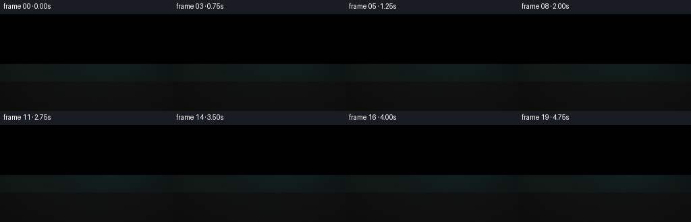
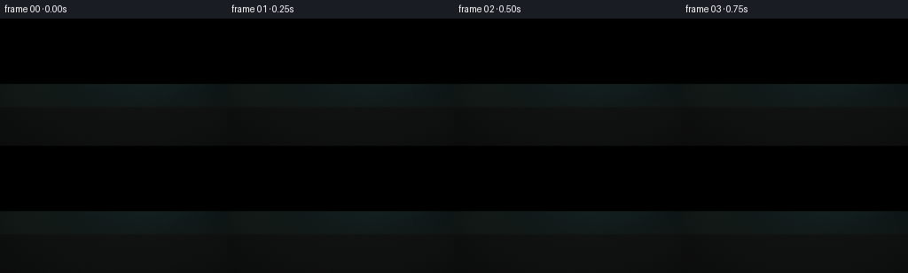
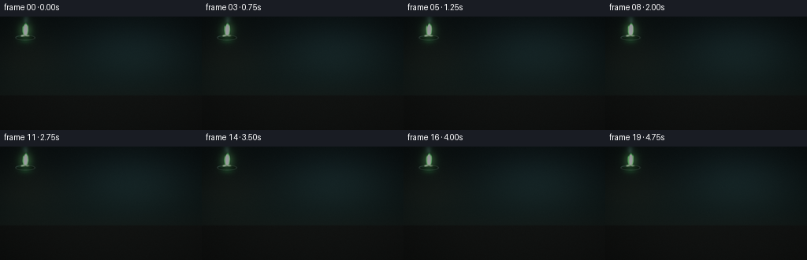
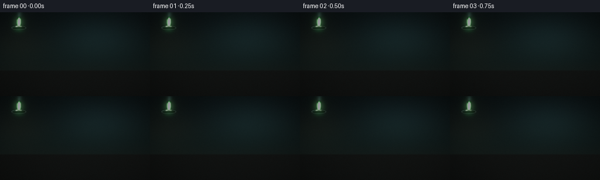
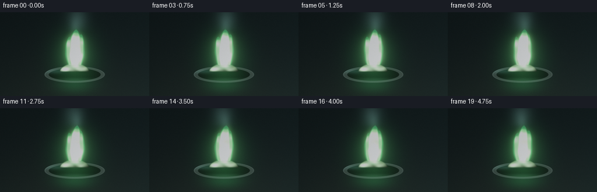
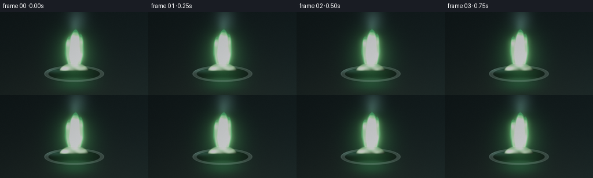

CODING AGENTS AS PIXEL WORLD MODELS
traex/DeepSeek-V4.1-Flash · material_0008
点击播放 · 原生 RGB 像素
逐轮保存的候选
回放视频、检查图与代码变化。
每份候选均可单独播放。实际图片检查记录在下方工具轨迹中。
候选 01播放与检查图
点击播放 · 原生 RGB 像素


展开代码变化
--- 上一保存版本
+++ 本次保存版本
@@ -0,0 +1,380 @@
+from pathlib import Path
+
+import numpy as np
+from PIL import Image
+from scipy.ndimage import gaussian_filter, zoom
+
+import artifact_io
+
+
+CASE_DIR = Path(__file__).resolve().parent
+W, H, N, FPS = 256, 144, 20, 4.0
+SS = 4
+RW, RH = W * SS, H * SS
+
+
+def clamp01(value):
+ return np.clip(value, 0.0, 1.0)
+
+
+def smoothstep(edge0, edge1, value):
+ t = clamp01((value - edge0) / (edge1 - edge0))
+ return t * t * (3.0 - 2.0 * t)
+
+
+def value_noise(rng, height, width, cell):
+ grid_h = int(np.ceil(height / cell)) + 3
+ grid_w = int(np.ceil(width / cell)) + 3
+ grid = rng.random((grid_h, grid_w), dtype=np.float32)
+ field = zoom(grid, (height / grid_h, width / grid_w), order=3, prefilter=False)
+ return np.clip(field[:height, :width], 0.0, 1.0)
+
+
+def fbm(noise_fields, weights):
+ return sum(field * weight for field, weight in zip(noise_fields, weights))
+
+
+def radial_field(x, y, cx, cy, sx, sy):
+ return np.exp(-(((x - cx) / sx) ** 2 + ((y - cy) / sy) ** 2))
+
+
+def ellipse_distance(x, y, cx, cy, rx, ry):
+ return ((x - cx) / rx) ** 2 + ((y - cy) / ry) ** 2
+
+
+def screen(base, light):
+ return 1.0 - (1.0 - np.clip(base, 0.0, 1.0)) * (1.0 - np.clip(light, 0.0, 1.0))
+
+
+def make_flame_field(x, y, phase, noise_a, noise_b, time_value):
+ """Composite several teardrop-shaped tongues into one flame density field."""
+ tongues = [
+ # base x, base y, height, width, sway, phase, strength
+ (128.2, 93.0, 65.0, 14.8, 3.2, 0.2, 1.00),
+ (122.2, 92.2, 52.0, 10.1, -3.8, 1.8, 0.79),
+ (134.4, 92.4, 56.5, 10.6, 4.4, 3.5, 0.84),
+ (126.0, 91.8, 43.5, 8.0, -2.0, 5.1, 0.62),
+ (131.3, 92.0, 38.0, 6.8, 2.3, 2.4, 0.54),
+ ]
+ field = np.zeros_like(x, dtype=np.float32)
+
+ for bx, by, height, width, sway, offset, strength in tongues:
+ v = (by - y) / height
+ active = (v > -0.03) & (v < 1.06)
+ vv = np.clip(v, 0.0, 1.0)
+
+ flicker = (
+ 0.050 * np.sin(phase * 3.0 + offset)
+ + 0.025 * np.sin(phase * 5.0 + offset * 2.1)
+ )
+ center = (
+ bx
+ + sway * np.power(vv, 1.65)
+ + (0.9 + 0.5 * np.sin(offset)) * np.sin(vv * 5.2 - phase + offset)
+ * np.power(vv, 1.8)
+ )
+ taper = np.sin(np.pi * np.clip(vv + 0.04, 0.0, 1.0)) ** 0.62
+ half_width = width * (0.19 + 0.81 * taper) * (1.0 - 0.34 * vv)
+ half_width *= 1.0 + flicker
+
+ texture = 0.86 + 0.20 * noise_a + 0.08 * noise_b
+ q = np.abs(x - center) / np.maximum(half_width, 0.8)
+ q *= 1.0 + 0.10 * (noise_b - 0.5) + 0.035 * np.sin(vv * 14.0 - phase * 2.0)
+
+ vertical = smoothstep(0.0, 0.055, vv) * (1.0 - smoothstep(0.73, 1.04, vv))
+ shape = 1.0 - smoothstep(0.55, 1.22, q)
+ tongue = strength * vertical * shape * texture
+ tongue *= active
+ field = np.maximum(field, tongue)
+
+ # A slightly pooled, luminous base makes the flame meet the crystals naturally.
+ base = radial_field(x, y, 128.0, 92.5, 11.0, 3.8)
+ base *= 0.58 + 0.15 * np.sin(phase * 2.0 + 0.4)
+ field = np.maximum(field, base)
+
+ # Ragged heat texture, strongest near the outside of the flame.
+ field *= 0.90 + 0.13 * noise_a + 0.06 * noise_b
+ field *= 0.96 + 0.04 * np.sin(time_value * 1.1)
+ return np.clip(field, 0.0, 1.0)
+
+
+def build_background(x, y):
+ yn = y / RH
+ xn = x / RW
+
+ top = np.array([0.030, 0.047, 0.049], dtype=np.float32)
+ mid = np.array([0.045, 0.071, 0.067], dtype=np.float32)
+ low = np.array([0.060, 0.078, 0.069], dtype=np.float32)
+ t_mid = smoothstep(0.04, 0.62, yn)[..., None]
+ bg = top + (mid - top) * t_mid
+ t_low = smoothstep(0.52, 0.78, yn)[..., None]
+ bg = bg + (low - bg) * t_low
+
+ # Out-of-focus cool light and a muted warm practical in the deep background.
+ cool_glow = radial_field(x, y, RW * 0.67, RH * 0.29, RW * 0.30, RH * 0.28)
+ warm_glow = radial_field(x, y, RW * 0.12, RH * 0.38, RW * 0.19, RH * 0.27)
+ bg += cool_glow[..., None] * np.array([0.030, 0.055, 0.057], dtype=np.float32)
+ bg += warm_glow[..., None] * np.array([0.025, 0.019, 0.010], dtype=np.float32)
+
+ # Matte table plane with a soft horizon.
+ table_mask = smoothstep(0.684, 0.704, yn)
+ table = np.array([0.047, 0.050, 0.045], dtype=np.float32)
+ table = table + (0.010 * (1.0 - yn) + 0.006 * xn)[..., None]
+ bg = bg * (1.0 - table_mask[..., None]) + table * table_mask[..., None]
+
+ return bg
+
+
+def build_dish(x, y, coarse_noise):
+ cx, cy = 128.0, 107.0
+ outer = ellipse_distance(x, y, cx, cy, 52.0, 14.3)
+ inner = ellipse_distance(x, y, cx, cy, 45.0, 10.9)
+ mask = 1.0 - smoothstep(0.965, 1.015, outer)
+ bowl = 1.0 - smoothstep(0.94, 1.02, inner)
+
+ # Dark graphite ceramic, with the front rim catching the flame.
+ base = np.empty(x.shape + (3,), dtype=np.float32)
+ rim_tone = np.array([0.115, 0.135, 0.125], dtype=np.float32)
+ base[:] = rim_tone
+ inside = np.array([0.030, 0.039, 0.035], dtype=np.float32)
+ base = base * (1.0 - bowl[..., None]) + inside * bowl[..., None]
+
+ normal_y = (y - cy) / 14.3
+ normal_x = (x - cx) / 52.0
+ top_light = clamp01(0.53 - 0.44 * normal_y + 0.12 * (-normal_x))
+ rim_band = smoothstep(0.88, 0.975, outer) * (1.0 - smoothstep(1.0, 1.08, outer))
+ left_arc = np.exp(-((x - 91.0) / 22.0) ** 2 - ((y - 101.0) / 4.2) ** 2)
+ front_arc = np.exp(-((x - 129.0) / 33.0) ** 2 - ((y - 116.5) / 3.4) ** 2)
+ speck = 0.84 + 0.16 * coarse_noise
+
+ base += (rim_band * top_light * 0.095 * speck)[..., None] * np.array(
+ [0.66, 0.82, 0.77], dtype=np.float32
+ )
+ base += (left_arc * 0.15)[..., None] * np.array([0.30, 0.55, 0.48], dtype=np.float32)
+ base += (front_arc * 0.07)[..., None] * np.array([0.52, 0.90, 0.60], dtype=np.float32)
+
+ # Very subtle green bounce inside the bowl.
+ bounce = radial_field(x, y, 128.0, 107.0, 31.0, 7.0)
+ base += (bounce * 0.055)[..., None] * np.array([0.12, 0.46, 0.19], dtype=np.float32)
+ return base, mask
+
+
+def build_mound(x, y, fine_noise, medium_noise, coarse_noise, glints, frame):
+ base_y = 101.5
+ top_center = 88.2
+ half_span = 25.0
+ dx = x - 127.8
+ span = np.clip(1.0 - (dx / half_span) ** 2, 0.0, 1.0)
+
+ # Fine noise roughens the top silhouette without destroying the conical heap.
+ surface = base_y - (base_y - top_center) * np.power(span, 0.62)
+ surface += (fine_noise - 0.5) * 1.8 + (medium_noise - 0.5) * 1.1
+ mound = (np.abs(dx) < half_span) & (y >= surface) & (y <= base_y)
+ mound_mask = mound.astype(np.float32)
+ mound_mask = gaussian_filter(mound_mask, 0.65 * SS)
+
+ slope = np.gradient(surface, axis=1)
+ normal_strength = clamp01(0.54 - slope * 1.8)
+ vertical = clamp01((base_y - y) / (base_y - top_center))
+ upper_light = smoothstep(0.02, 0.85, vertical)
+
+ albedo = 0.62 + 0.16 * fine_noise + 0.08 * medium_noise
+ crystal = 0.88 + 0.12 * np.sin(
+ x * 0.34 + y * 0.18 + coarse_noise * 7.0 + frame * 0.10
+ )
+ albedo *= crystal
+
+ ambient = np.array([0.15, 0.18, 0.16], dtype=np.float32)
+ green_light = np.array([0.63, 1.00, 0.50], dtype=np.float32)
+ warm_rim = np.array([0.22, 0.24, 0.18], dtype=np.float32)
+
+ color = ambient * (0.32 + 0.20 * normal_strength[..., None])
+ color += green_light * (upper_light * (0.34 + 0.38 * normal_strength))[..., None]
+ color += warm_rim * ((1.0 - vertical) * 0.25)[..., None]
+ color *= (albedo * (0.76 + 0.22 * normal_strength))[..., None]
+
+ # Darker crevices and bright upper facets give the heap readable crystalline form.
+ crevice = clamp01((0.48 - medium_noise) * 2.2) * (0.55 + 0.45 * (1.0 - vertical))
+ color *= (1.0 - 0.22 * crevice)[..., None]
+ facets = clamp01((fine_noise - 0.63) * 3.2) * upper_light
+ color += facets[..., None] * np.array([0.20, 0.27, 0.20], dtype=np.float32)
+
+ for gx, gy, radius, strength, twinkle in glints:
+ pulse = 0.72 + 0.28 * np.sin(frame * 1.45 + twinkle)
+ sparkle = np.exp(-(((x - gx) / radius) ** 2 + ((y - gy) / (radius * 0.62)) ** 2))
+ color += (sparkle * strength * pulse)[..., None] * np.array(
+ [0.72, 0.95, 0.64], dtype=np.float32
+ )
+
+ return color, mound_mask
+
+
+def make_glints(rng):
+ glints = []
+ for _ in range(44):
+ gx = 127.8 + rng.uniform(-20.5, 20.5)
+ normalized = abs(gx - 127.8) / 25.0
+ top = 88.5 + 11.5 * (normalized ** 1.25)
+ gy = rng.uniform(top + 1.0, 99.5)
+ glints.append(
+ (
+ float(gx),
+ float(gy),
+ float(rng.uniform(0.7, 1.8) * SS),
+ float(rng.uniform(0.08, 0.30)),
+ float(rng.uniform(0.0, 2.0 * np.pi)),
+ )
+ )
+ return glints
+
+
+def render_frame(frame, background, dish_color, dish_mask, mound_color, mound_mask,
+ glints, noise_fields):
+ phase = 2.0 * np.pi * frame / N
+ time_value = frame / FPS
+ y, x = np.mgrid[0:RH, 0:RW].astype(np.float32)
+
+ coarse, medium, fine = noise_fields
+ dx = int(round(1.2 * np.sin(phase) * SS))
+ dy = int(round(0.8 * np.cos(phase * 2.0) * SS))
+ fine_shift = np.roll(fine, (dy, dx), axis=(0, 1))
+ medium_shift = np.roll(medium, (-dy, dx), axis=(0, 1))
+ flame_noise = 0.64 * fine_shift + 0.36 * medium_shift
+ flame_noise_b = 0.55 * coarse + 0.45 * np.roll(fine, (-dy, -dx), axis=(0, 1))
+
+ flame = make_flame_field(x, y, phase, flame_noise, flame_noise_b, time_value)
+
+ # Build the scene in linear-ish display values.
+ image = background.copy()
+ image = image * (1.0 - dish_mask[..., None]) + dish_color * dish_mask[..., None]
+
+ # Light the dish and table with the flame, before drawing the luminous source.
+ flame_light = radial_field(x, y, 128.0, 82.0, 38.0, 47.0)
+ image += (flame_light * 0.13)[..., None] * np.array([0.15, 0.66, 0.25], dtype=np.float32)
+ reflection = radial_field(x, y, 128.0, 125.0, 30.0, 12.0)
+ image += (reflection * 0.10)[..., None] * np.array([0.12, 0.58, 0.22], dtype=np.float32)
+
+ image = image * (1.0 - mound_mask[..., None]) + mound_color * mound_mask[..., None]
+
+ # Emission layers: outer green, hot lime body, near-white core.
+ outer_mask = smoothstep(0.025, 0.26, flame)
+ body_mask = smoothstep(0.34, 0.76, flame)
+ core_mask = smoothstep(0.72, 0.98, flame)
+
+ outer_rgb = np.array([0.075, 0.78, 0.23], dtype=np.float32)
+ body_rgb = np.array([0.47, 1.00, 0.36], dtype=np.float32)
+ core_rgb = np.array([0.96, 1.00, 0.73], dtype=np.float32)
+
+ emission = outer_mask[..., None] * outer_rgb * 0.34
+ emission += body_mask[..., None] * body_rgb * 0.78
+ emission += core_mask[..., None] * core_rgb * 0.92
+
+ # A few internal hot filaments break up the otherwise smooth flame body.
+ filament = clamp01((flame_noise - 0.55) * 3.3) * body_mask
+ emission += filament[..., None] * np.array([0.24, 0.75, 0.22], dtype=np.float32)
+
+ # Small, slow green motes, all with periodic motion for a seamless five seconds.
+ embers = np.zeros_like(flame)
+ for index in range(9):
+ angle = 2.0 * np.pi * (index / 9.0)
+ rise = (frame / N + index * 0.137) % 1.0
+ ex = 128.0 + np.sin(angle * 2.1 + phase) * (5.0 + 4.0 * rise)
+ ey = 91.0 - rise * (48.0 + 9.0 * np.sin(angle))
+ fade = np.sin(np.pi * rise) ** 0.6
+ sx = (0.55 + 0.35 * (index % 3)) * SS
+ embers += radial_field(x, y, ex, ey, sx, sx * 1.4) * (0.22 * fade)
+ emission += embers[..., None] * np.array([0.72, 1.0, 0.42], dtype=np.float32)
+
+ # Layered bloom and a restrained halo sell the bright, low-light source.
+ bloom = gaussian_filter(emission, sigma=(5.0 * SS, 5.0 * SS, 0.0))
+ halo = gaussian_filter(emission, sigma=(15.0 * SS, 15.0 * SS, 0.0))
+ image = screen(image, emission * 0.96)
+ image = screen(image, bloom * 0.34)
+ image = screen(image, halo * 0.13)
+
+ # Soft smoke only above the hottest tip, kept low contrast.
+ smoke = np.zeros_like(flame)
+ for index in range(4):
+ offset = index * 4.2
+ center_x = 128.0 + 4.2 * np.sin(phase * 0.55 + index * 0.8) + offset * 0.13
+ center_y = 25.0 - offset * 1.4
+ smoke += radial_field(x, y, center_x, center_y, 7.0 + offset, 12.0 + offset)
+ smoke *= smoothstep(0.0, 0.45, (45.0 - y) / 45.0)
+ image += smoke[..., None] * np.array([0.026, 0.039, 0.036], dtype=np.float32)
+
+ # Color grade, filmic shoulder, vignette, and very light sensor grain.
+ image[:, :, 0] *= 0.95
+ image[:, :, 2] *= 1.03
+ exposure = 1.34
+ image = 1.0 - np.exp(-np.maximum(image, 0.0) * exposure)
+
+ vignette = 1.0 - 0.26 * (((x / RW - 0.5) / 0.62) ** 2 + ((y / RH - 0.52) / 0.72) ** 2)
+ image *= np.clip(vignette, 0.66, 1.0)[..., None]
+
+ grain_rng = np.random.default_rng(7000 + frame)
+ grain = grain_rng.normal(0.0, 0.0065, (RH, RW, 1)).astype(np.float32)
+ image = np.clip(image + grain, 0.0, 1.0)
+
+ small = Image.fromarray(np.round(image * 255.0).astype(np.uint8), mode="RGB")
+ small = small.resize((W, H), Image.Resampling.LANCZOS)
+ return np.asarray(small, dtype=np.uint8)
+
+
+def main():
+ rng = np.random.default_rng(4217)
+ y, x = np.mgrid[0:RH, 0:RW].astype(np.float32)
+
+ background = build_background(x, y)
+ coarse = value_noise(rng, RH, RW, 52 * SS)
+ medium = value_noise(rng, RH, RW, 17 * SS)
+ fine = value_noise(rng, RH, RW, 5.2 * SS)
+ micro = value_noise(rng, RH, RW, 2.3 * SS)
+ coarse = 0.72 * coarse + 0.28 * micro
+
+ dish_color, dish_mask = build_dish(x, y, coarse)
+ glints = make_glints(rng)
+ mound_color, mound_mask = build_mound(
+ x, y, fine, medium, coarse, glints, frame=0
+ )
+
+ frames = []
+ for frame in range(N):
+ mound_dynamic, _ = build_mound(
+ x, y, fine, medium, coarse, glints, frame=frame
+ )
+ frame_rgb = render_frame(
+ frame,
+ background,
+ dish_color,
+ dish_mask,
+ mound_dynamic,
+ mound_mask,
+ glints,
+ (coarse, medium, fine),
+ )
+ frames.append(frame_rgb)
+ print(f"rendered frame {frame + 1:02d}/{N}", flush=True)
+
+ frames = np.stack(frames)
+ artifact_io.save(frames, CASE_DIR)
+
+ # Optional shareable preview; the benchmark contract still reads pixels.npz/index.html.
+ try:
+ import cv2
+
+ writer = cv2.VideoWriter(
+ str(CASE_DIR / "preview.mp4"),
+ cv2.VideoWriter_fourcc(*"mp4v"),
+ FPS,
+ (W, H),
+ )
+ if writer.isOpened():
+ for frame_rgb in frames:
+ writer.write(cv2.cvtColor(frame_rgb, cv2.COLOR_RGB2BGR))
+ writer.release()
+ except Exception as exc:
+ print(f"preview.mp4 skipped: {exc}")
+
+
+if __name__ == "__main__":
+ main()
候选 02播放与检查图
点击播放 · 原生 RGB 像素


展开代码变化
--- 上一保存版本
+++ 本次保存版本
@@ -73,7 +73,10 @@
+ (0.9 + 0.5 * np.sin(offset)) * np.sin(vv * 5.2 - phase + offset)
* np.power(vv, 1.8)
)
- taper = np.sin(np.pi * np.clip(vv + 0.04, 0.0, 1.0)) ** 0.62
+ taper = np.power(
+ np.maximum(np.sin(np.pi * np.clip(vv + 0.04, 0.0, 1.0)), 0.0),
+ 0.62,
+ )
half_width = width * (0.19 + 0.81 * taper) * (1.0 - 0.34 * vv)
half_width *= 1.0 + flicker
@@ -315,7 +318,7 @@
grain = grain_rng.normal(0.0, 0.0065, (RH, RW, 1)).astype(np.float32)
image = np.clip(image + grain, 0.0, 1.0)
- small = Image.fromarray(np.round(image * 255.0).astype(np.uint8), mode="RGB")
+ small = Image.fromarray(np.round(image * 255.0).astype(np.uint8))
small = small.resize((W, H), Image.Resampling.LANCZOS)
return np.asarray(small, dtype=np.uint8)
候选 03播放与检查图
点击播放 · 原生 RGB 像素


展开代码变化
--- 上一保存版本
+++ 本次保存版本
@@ -235,7 +235,7 @@
glints, noise_fields):
phase = 2.0 * np.pi * frame / N
time_value = frame / FPS
- y, x = np.mgrid[0:RH, 0:RW].astype(np.float32)
+ y, x = (np.mgrid[0:RH, 0:RW].astype(np.float32) / SS)
coarse, medium, fine = noise_fields
dx = int(round(1.2 * np.sin(phase) * SS))
@@ -308,7 +308,7 @@
# Color grade, filmic shoulder, vignette, and very light sensor grain.
image[:, :, 0] *= 0.95
image[:, :, 2] *= 1.03
- exposure = 1.34
+ exposure = 2.55
image = 1.0 - np.exp(-np.maximum(image, 0.0) * exposure)
vignette = 1.0 - 0.26 * (((x / RW - 0.5) / 0.62) ** 2 + ((y / RH - 0.52) / 0.72) ** 2)
@@ -325,7 +325,7 @@
def main():
rng = np.random.default_rng(4217)
- y, x = np.mgrid[0:RH, 0:RW].astype(np.float32)
+ y, x = (np.mgrid[0:RH, 0:RW].astype(np.float32) / SS)
background = build_background(x, y)
coarse = value_noise(rng, RH, RW, 52 * SS)
可观测工具轨迹
实际执行的命令与返回图片。
命令 1exit 0
/bin/bash -c "pwd && rg --files -g 'prompt.txt' -g 'GENERATION_RULES.md' -g 'task_spec.json' -g '"'!node_modules'"' -g '"'!vendor'"'"
命令 2exit 0
/bin/bash -c "ls -la && find . -maxdepth 2 -type f | sed 's#"'^./##'"' | sort | head -200"
命令 3exit 0
/bin/bash -c 'cat prompt.txt'
命令 4exit 0
/bin/bash -c 'cat GENERATION_RULES.md'
命令 5exit 0
/bin/bash -c 'cat task_spec.json'
命令 6exit 0
/bin/bash -c "sed -n '1,240p' artifact_io.py && printf '\\n--- player ---\\n' && sed -n '1,260p' player_template.html"
命令 7exit 0
/bin/bash -c "python - <<'PY' import importlib.util for m in ['numpy','PIL','scipy','cv2','noise','skimage']: print(m, bool(importlib.util.find_spec(m))) PY ffmpeg -version | head -3 || true"
命令 8exit 1
/bin/bash -c 'python generate.py'
命令 9exit 0
/bin/bash -c 'python generate.py'
命令 10exit 0
/bin/bash -c 'ls -lh inspection.png transition_check.png pixels.npz preview.mp4 index.html frames/00.png'
命令 11exit 0
/bin/bash -c 'command -v chafa || true; command -v viu || true; command -v jp2 || true; command -v img2txt || true; command -v convert || true'
命令 12exit 0
/bin/bash -c "python - <<'PY' from PIL import Image import numpy as np for p in ['frames/00.png','frames/10.png','frames/19.png']: a=np.asarray(Image.open(p)) print(p, 'min',a.reshape(-1,3).min(0),'max',a.reshape(-1,3).max(0),'mean',a.mean((0,1)).round(1),'black',np.sum(np.all(a==0,axis=2)),'green>r,b',np.sum((a[:,:,1]>a[:,:,0]+15)&(a[:,:,1]>a[:,:,2]+15))) PY"
命令 13exit 0
/bin/bash -c 'python generate.py'
命令 14exit 0
/bin/bash -c "python - <<'PY' from PIL import Image import numpy as np for p in ['frames/00.png','frames/05.png','frames/10.png','frames/15.png','frames/19.png']: a=np.asarray(Image.open(p)) print(p, 'max',a.reshape(-1,3).max(0),'mean',a.mean((0,1)).round(1),'black',np.sum(np.all(a==0,axis=2)),'green>r,b',np.sum((a[:,:,1]>a[:,:,0]+15)&(a[:,:,1]>a[:,:,2]+15)),'bright',np.sum(a.max(2)>180)) PY"
命令 15exit 0
/bin/bash -c "python - <<'PY'
from PIL import Image
import numpy as np
im=Image.open('frames/10.png').resize((64,36),Image.Resampling.BILINEAR)
a=np.asarray(im).astype(float)
y=a.mean(2)
chars=' .:-=+*#%@'
for row in y:
print(''.join(chars[min(len(chars)-1,int(v/256*len(chars)))] for v in row))
PY"命令 16exit 0
/bin/bash -c "python - <<'PY'
from PIL import Image
import numpy as np
for p in ['frames/00.png','inspection.png']:
im=Image.open(p); a=np.asarray(im)
print(p, im.size, a.shape)
m=a.max(2)>45
ys,xs=np.where(m)
print('bbox>45', (xs.min(),ys.min(),xs.max(),ys.max()), 'n',len(xs))
m=a.max(2)>100
ys,xs=np.where(m)
print('bbox>100', (xs.min(),ys.min(),xs.max(),ys.max()), 'n',len(xs))
PY"命令 17exit 0
/bin/bash -c "python - <<'PY'
from PIL import Image
import numpy as np
a=np.asarray(Image.open('frames/10.png')).astype(float)
# Print 16-level color luminance in crop x=88..168, y=15..125
for y in range(15,126,5):
row=''
for x in range(88,169,2):
v=a[y:y+5,x:x+2].mean()
row += ' .:-=+*#%@'[min(9,int(v/25.6))]
print(f'{y:03d} {row}')
print('channel max location',np.unravel_index(a.max(2).argmax(),a.shape[:2]),a[a.max(2).argmax()//a.shape[1],a.max(2).argmax()%a.shape[1]])
PY"命令 18exit 0
/bin/bash -c "nl -ba generate.py | sed -n '55,115p;210,325p'"
命令 19exit 0
/bin/bash -c "python - <<'PY'
# Debug the candidate's flame field in a small independent import (main is guarded).
import generate
import numpy as np
from scipy.ndimage import zoom
rng=np.random.default_rng(4217)
y,x=np.mgrid[0:generate.RH,0:generate.RW].astype(np.float32)
coarse=generate.value_noise(rng,generate.RH,generate.RW,52*generate.SS)
medium=generate.value_noise(rng,generate.RH,generate.RW,17*generate.SS)
fine=generate.value_noise(rng,generate.RH,generate.RW,5.2*generate.SS)
f=generate.make_flame_field(x,y,2*np.pi*10/generate.N,0.6*fine+0.4*medium,0.5*coarse+0.5*fine,2.5)
print('field',f.min(),f.max(),np.percentile(f,[50,90,95,99,99.9]))
for th in [0.025,.2,.5,.8,.95]: print(th, np.sum(f>th))
# scene components
bg=generate.build_background(x,y); dc,dm=generate.build_dish(x,y,coarse); gl=generate.make_glints(rng); mc,mm=generate.build_mound(x,y,fine,medium,coarse,gl,0)
print('mound mask',mm.max(),mm.sum(),'dish',dm.max(),dm.sum(),'dish max rgb',dc.max((0,1)))
print('mound max rgb',mc.max((0,1)),'mean',mc.mean((0,1)))
# reproduce render without smoothing to see
PY"命令 20exit 0
/bin/bash -c "python - <<'PY'
# Verify image-space placement after the 4x downsample.
from PIL import Image
import numpy as np
a=np.asarray(Image.open('frames/10.png')).astype(float)
for box in [(100,40,156,95),(100,30,156,90),(90,30,165,110),(120,20,137,90)]:
x0,y0,x1,y1=box; c=a[y0:y1,x0:x1]
print(box,'mean',c.mean((0,1)).round(1),'max',c.max((0,1)))
# coordinates of green pixels
m=(a[:,:,1]>a[:,:,0]+8)&(a[:,:,1]>a[:,:,2]+8)
ys,xs=np.where(m)
print('green bbox',xs.min(),ys.min(),xs.max(),ys.max(),len(xs))
# brightest crops
idx=np.argpartition(a.mean(2).ravel(),-30)[-30:]
print([(int(i%256),int(i//256),a.reshape(-1,3)[i].astype(int).tolist()) for i in idx[-10:]])
PY"命令 21exit 0
/bin/bash -c "python - <<'PY'
import generate, numpy as np
from scipy.ndimage import zoom
rng=np.random.default_rng(4217); y,x=np.mgrid[0:generate.RH,0:generate.RW].astype(np.float32)
coarse=generate.value_noise(rng,generate.RH,generate.RW,52*generate.SS)
medium=generate.value_noise(rng,generate.RH,generate.RW,17*generate.SS)
fine=generate.value_noise(rng,generate.RH,generate.RW,5.2*generate.SS)
micro=generate.value_noise(rng,generate.RH,generate.RW,2.3*generate.SS)
coarse=.72*coarse+.28*micro
bg=generate.build_background(x,y); dc,dm=generate.build_dish(x,y,coarse); gl=generate.make_glints(rng); mc,mm=generate.build_mound(x,y,fine,medium,coarse,gl,10)
f=generate.make_flame_field(x,y,2*np.pi*10/generate.N,.64*fine+.36*medium,.55*coarse+.45*fine,2.5)
# mimic render and track where large values are
im=bg.copy(); im=im*(1-dm[...,None])+dc*dm[...,None]
fl=generate.radial_field(x,y,128,82,38,47); im+=(fl*.13)[...,None]*np.array([.15,.66,.25])
ref=generate.radial_field(x,y,128,125,30,12); im+=(ref*.10)[...,None]*np.array([.12,.58,.22])
im=im*(1-mm[...,None])+mc*mm[...,None]
print('before emission max location',np.unravel_index(im.max(2).argmax(),im.shape[:2]),im.max((0,1)))
om=generate.smoothstep(.025,.26,f); bm=generate.smoothstep(.34,.76,f); cm=generate.smoothstep(.72,.98,f)
em=om[...,None]*np.array([.075,.78,.23])*.34 + bm[...,None]*np.array([.47,1,.36])*.78 + cm[...,None]*np.array([.96,1,.73])*.92
fil=generate.clamp01((.64*fine+.36*medium-.55)*3.3)*bm
em+=fil[...,None]*np.array([.24,.75,.22])
print('emission max',em.max((0,1)), 'coords at',np.unravel_index(em.max(2).argmax(),em.shape[:2]))
im=generate.screen(im,em*.96)
print('screen max loc',np.unravel_index(im.max(2).argmax(),im.shape[:2]), im.max((0,1)), 'flame mean',im[400:440,480:560].mean((0,1)))
b=generate.gaussian_filter(em,sigma=(5*generate.SS,5*generate.SS,0)); im=generate.screen(im,b*.34)
print('bloom max',b.max((0,1)), im.max((0,1)))
h=generate.gaussian_filter(em,sigma=(15*generate.SS,15*generate.SS,0)); im=generate.screen(im,h*.13)
print('halo max',h.max((0,1)), im.max((0,1)), 'max loc',np.unravel_index(im.max(2).argmax(),im.shape[:2]))
im=1-np.exp(-np.maximum(im,0)*1.34)
print('toned max',im.max((0,1)))
PY"命令 22exit 0
/bin/bash -c "python - <<'PY'
# Sample the actual rendered image in 8x8 blocks around the intended flame and mound.
from PIL import Image
import numpy as np
a=np.asarray(Image.open('frames/10.png')).astype(float)
for y in range(20,120,8):
vals=[]
for x in range(88,168,8):
c=a[y:y+8,x:x+8].mean((0,1)).astype(int)
vals.append(f'{c[1]:02x}{c[0]:02x}{c[2]:02x}')
print(f'{y:03d}', ' '.join(vals))
PY"命令 23exit 0
/bin/bash -c "python - <<'PY'
from PIL import Image
import numpy as np
a=np.asarray(Image.open('frames/10.png')).astype(int)
# find actual max coords and blocks
for y,x in [(20,32),(25,128),(60,128),(80,128),(95,128),(100,100),(50,130)]: print((x,y),a[y,x])
# luminance at the flame bbox x120:136 y30:80
print(a[30:80,120:137].mean((0,1)), a[30:80,120:137].max((0,1)))
PY"命令 24exit 0
/bin/bash -c "python - <<'PY'
# Check whether rendering is actually using the same rng state after the debug calls.
import generate, numpy as np
rng=np.random.default_rng(4217); y,x=np.mgrid[0:generate.RH,0:generate.RW].astype(np.float32)
bg=generate.build_background(x,y)
coarse=generate.value_noise(rng,generate.RH,generate.RW,52*generate.SS)
medium=generate.value_noise(rng,generate.RH,generate.RW,17*generate.SS)
fine=generate.value_noise(rng,generate.RH,generate.RW,5.2*generate.SS)
micro=generate.value_noise(rng,generate.RH,generate.RW,2.3*generate.SS)
coarse=.72*coarse+.28*micro
dc,dm=generate.build_dish(x,y,coarse); gl=generate.make_glints(rng)
mc,mm=generate.build_mound(x,y,fine,medium,coarse,gl,0)
frames=[]
for i in [10]:
md,_=generate.build_mound(x,y,fine,medium,coarse,gl,i)
frames.append(generate.render_frame(i,bg,dc,dm,md,mm,gl,(coarse,medium,fine)))
Image=__import__('PIL.Image',fromlist=['Image'])
Image.fromarray(frames[0]).save('.tmp/debug10.png')
a=np.asarray(frames[0]).astype(int)
print(a[20,32],a[30:80,120:137].max((0,1)),a.max((0,1)))
PY"命令 25exit 0
/bin/bash -c "python - <<'PY'
# Inspect raw scene layers at a few pixels using the exact main() setup.
import generate, numpy as np
from PIL import Image
rng=np.random.default_rng(4217); y,x=np.mgrid[0:generate.RH,0:generate.RW].astype(np.float32)
bg=generate.build_background(x,y)
coarse=generate.value_noise(rng,generate.RH,generate.RW,52*generate.SS); medium=generate.value_noise(rng,generate.RH,generate.RW,17*generate.SS); fine=generate.value_noise(rng,generate.RH,generate.RW,5.2*generate.SS); micro=generate.value_noise(rng,generate.RH,generate.RW,2.3*generate.SS); coarse=.72*coarse+.28*micro
dc,dm=generate.build_dish(x,y,coarse); gl=generate.make_glints(rng); mc,mm=generate.build_mound(x,y,fine,medium,coarse,gl,10)
for xx,yy in [(128,60),(32,20),(128,100),(64,72),(200,72)]:
print((xx,yy),'bg',bg[yy*4,xx*4], 'dish',dc[yy*4,xx*4], 'dm',dm[yy*4,xx*4], 'mound',mc[yy*4,xx*4], 'mm',mm[yy*4,xx*4])
print('dm dtype/range',dm.dtype,dm.min(),dm.max(),'mm',mm.min(),mm.max())
PY"命令 26exit 0
/bin/bash -c "python - <<'PY'
import generate,numpy as np
rng=np.random.default_rng(4217); y,x=np.mgrid[0:generate.RH,0:generate.RW].astype(np.float32)
bg=generate.build_background(x,y)
coarse=generate.value_noise(rng,generate.RH,generate.RW,52*generate.SS); medium=generate.value_noise(rng,generate.RH,generate.RW,17*generate.SS); fine=generate.value_noise(rng,generate.RH,generate.RW,5.2*generate.SS); micro=generate.value_noise(rng,generate.RH,generate.RW,2.3*generate.SS); coarse=.72*coarse+.28*micro
dc,dm=generate.build_dish(x,y,coarse); gl=generate.make_glints(rng); mc,mm=generate.build_mound(x,y,fine,medium,coarse,gl,10)
phase=2*np.pi*10/generate.N; dx=int(round(1.2*np.sin(phase)*generate.SS)); dy=int(round(.8*np.cos(phase*2)*generate.SS)); fs=np.roll(fine,(dy,dx),(0,1)); ms=np.roll(medium,(-dy,dx),(0,1)); f=generate.make_flame_field(x,y,phase,.64*fs+.36*ms,.55*coarse+.45*np.roll(fine,(-dy,-dx),(0,1)),2.5)
im=bg.copy(); im=im*(1-dm[...,None])+dc*dm[...,None]
print('stage1',im[20*4,32*4],im[60*4,128*4])
fl=generate.radial_field(x,y,128,82,38,47); im+=(fl*.13)[...,None]*np.array([.15,.66,.25]); print('stage2',im[20*4,32*4],im[60*4,128*4])
ref=generate.radial_field(x,y,128,125,30,12); im+=(ref*.10)[...,None]*np.array([.12,.58,.22]); print('stage3',im[20*4,32*4],im[60*4,128*4])
im=im*(1-mm[...,None])+mc*mm[...,None]; print('stage4',im[20*4,32*4],im[60*4,128*4])
om=generate.smoothstep(.025,.26,f); bm=generate.smoothstep(.34,.76,f); cm=generate.smoothstep(.72,.98,f)
em=om[...,None]*np.array([.075,.78,.23])*.34+bm[...,None]*np.array([.47,1,.36])*.78+cm[...,None]*np.array([.96,1,.73])*.92
print('em',em[20*4,32*4],em[60*4,128*4],'f',f[20*4,32*4],f[60*4,128*4])
im=generate.screen(im,em*.96); print('stage5',im[20*4,32*4],im[60*4,128*4])
b=generate.gaussian_filter(em,sigma=(5*generate.SS,5*generate.SS,0)); h=generate.gaussian_filter(em,sigma=(15*generate.SS,15*generate.SS,0)); im=generate.screen(im,b*.34); im=generate.screen(im,h*.13); print('stage6',im[20*4,32*4],im[60*4,128*4])
im[:,:,0]*=.95; im[:,:,2]*=1.03; im=1-np.exp(-np.maximum(im,0)*1.34); print('stage7',im[20*4,32*4],im[60*4,128*4])
PY"命令 27exit 0
/bin/bash -c "python - <<'PY'
import generate, numpy as np
from PIL import Image
rng=np.random.default_rng(4217); y,x=(np.mgrid[0:generate.RH,0:generate.RW].astype(np.float32)/generate.SS)
bg=generate.build_background(x,y)
coarse=generate.value_noise(rng,generate.RH,generate.RW,52*generate.SS); medium=generate.value_noise(rng,generate.RH,generate.RW,17*generate.SS); fine=generate.value_noise(rng,generate.RH,generate.RW,5.2*generate.SS); micro=generate.value_noise(rng,generate.RH,generate.RW,2.3*generate.SS); coarse=.72*coarse+.28*micro
dc,dm=generate.build_dish(x,y,coarse); gl=generate.make_glints(rng); mc,mm=generate.build_mound(x,y,fine,medium,coarse,gl,10)
md,_=generate.build_mound(x,y,fine,medium,coarse,gl,10)
im=generate.render_frame(10,bg,dc,dm,md,mm,gl,(coarse,medium,fine)); Image.fromarray(im).save('.tmp/fixed10.png')
a=im.astype(float); print('max',a.max((0,1)),'mean',a.mean((0,1)).round(1),'bright>180',np.sum(a.max(2)>180),'green',np.sum((a[:,:,1]>a[:,:,0]+15)&(a[:,:,1]>a[:,:,2]+15)))
for yy,xx in [(40,128),(60,128),(80,128),(95,128),(105,128),(25,32),(100,80)]: print((xx,yy),a[yy,xx])
PY"命令 28exit 0
/bin/bash -c 'python generate.py'
命令 29exit 0
/bin/bash -c "python - <<'PY'
from PIL import Image
import numpy as np
for p in ['frames/00.png','frames/05.png','frames/10.png','frames/15.png','frames/19.png']:
a=np.asarray(Image.open(p)).astype(float)
print(p,'mean',a.mean((0,1)).round(1),'max',a.max((0,1)),'green',np.sum((a[:,:,1]>a[:,:,0]+15)&(a[:,:,1]>a[:,:,2]+15)),'bright',np.sum(a.max(2)>180))
# ascii of center crop
im=Image.open('frames/10.png').resize((64,36),Image.Resampling.BILINEAR)
a=np.asarray(im).astype(float); y=a.mean(2); chars=' .:-=+*#%@'
for row in y:
print(''.join(chars[min(len(chars)-1,int(v/256*len(chars)))] for v in row))
PY"保存候选 3 份；完成命令 29 次；可验证图片返回 0 张。原始 API 响应与完整日志保留在本地。